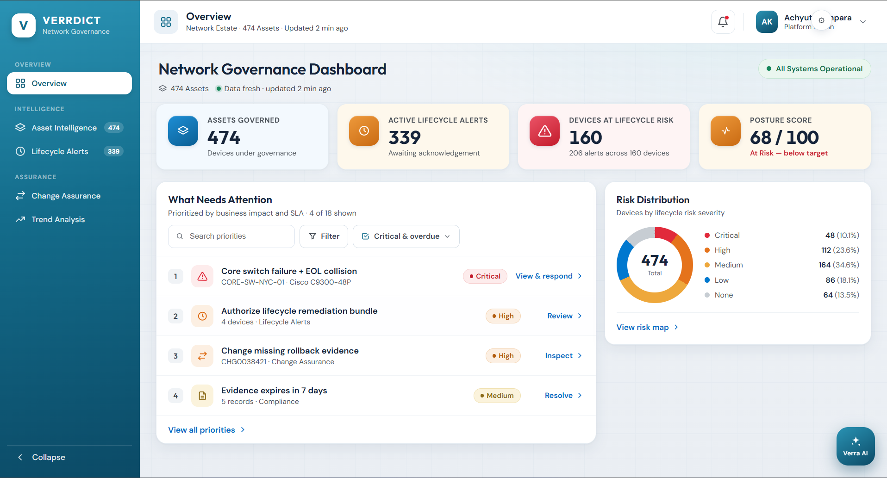
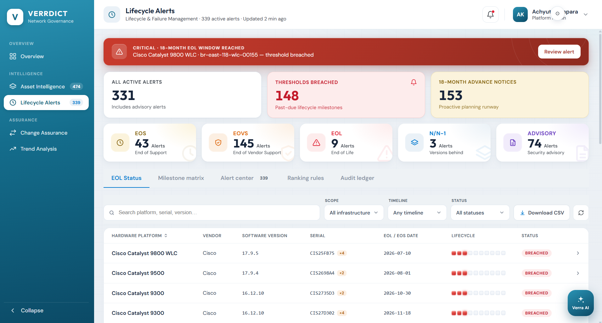
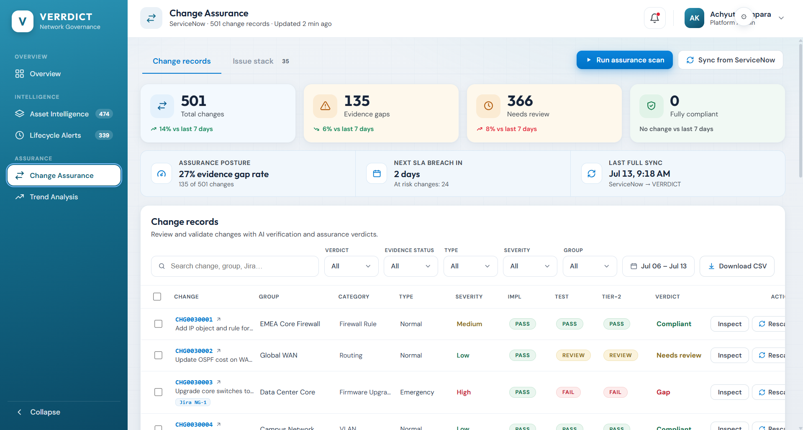
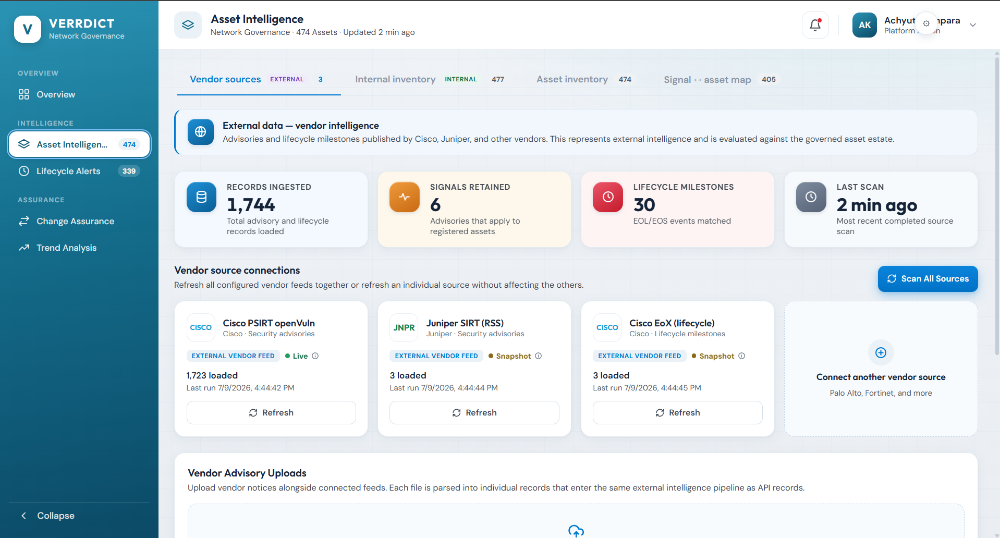
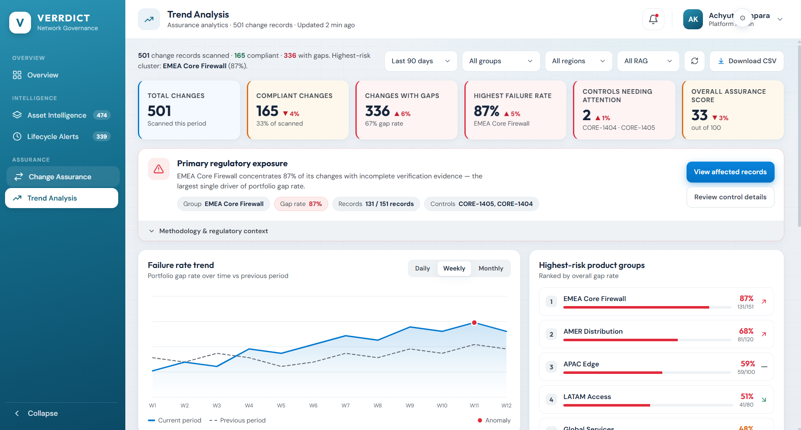

Designing trust into network governance for a large financial company.

Governance work was spread across tools, and the reasoning behind every verdict was hidden.
One platform where every flag is ranked, sourced, explained, and actionable in place.
Owned design end to end — audit, IA, flows, UI, design system — as the only designer.
Governance is a loop, not a report.
Thousands of devices, versions, vendors.
Vendor warnings keep arriving.
Compliant, gap, or needs review.
It has to hold up when audited.
Break one link and you can no longer explain the result.
The design had to be buildable inside the sprint the team already had planned.
No research team, no second pair of hands.
New screens had to reuse the existing component set.
The freedom was in how modules behaved, not what shipped.
Owned design end to end.
Owned delivery.
Built from the design system.
Delivery & client relationship.
I owned design end to end; the PM owned delivery.
When you can't see how a decision was made, every decision is a risk.
Where do I start today?
Why does it say gap?
What is our exposure?
Is this data current?
No sense of priority.
Verdicts without reasons.
Data of unknown age.
Dead ends: seeing and fixing were separate trips.
The work was spread across tools and the reasoning was hidden.
A data problem → a clarity problem.
Devices, risk and open decisions without leaving the page.
No status appears without a way to see why.
Hundreds of alerts should feel like a to-do list.
Steps 1 and 2 ran together; the problem kept shifting as the audit went deeper.
| Can I tell what matters most? | Nothing was ranked. |
| Can I see why it says that? | No route to the evidence. |
| Do I know where this came from? | Internal and vendor looked alike. |
| Can I act from here? | Reading and fixing were separate. |
| Would this survive an audit? | No trail from decision to record. |
| Vulnerability scanners | Partial consolidation, no explanation, partial audit trail. |
| Asset inventories | Assets only, no explanation, no audit trail. |
| Change & ticketing | No consolidation, partial explanation, strong audit trail. |
| VERRDICT | Consolidated by design, explains itself by default, audit trail built in. |
The gap was not more data. It was the link between data and judgement.
Flat urgency, no first move, alert fatigue.
Unsourced numbers, stale data, black-box verdicts.
Read here, act there. Lost context, no trail.
Evidence: Reviewers didn't need more alerts; they needed to know which one to open first.
So I designed: a ranked attention list first on the dashboard.
Evidence: A verdict without a reason is a liability, not an answer.
So I designed: every decision carries its reasons, one click away.
Evidence: Where data came from mattered as much as what it said.
So I designed: source and age became permanent labels.
| No order of work | Ranked attention queue. |
| No basis for verdicts | Reasons revealed step by step. |
| Invisible source and age | Permanent source labels. |
| Separate reading and resolving | An action on every row. |
How do we make every decision something a reviewer can act on and explain, in one place?
No status ships unless the reason is one click away.
Rank the work; counts alone tell a reviewer nothing.
External or internal, live or snapshot, and how old.
Colour is reserved for risk.
The day's ranked work.
Asset Intelligence, Lifecycle Alerts.
Change Assurance, Trend Analysis.
Five places, one level deep. Nothing needed daily is buried.
The reviewer never leaves the record, and the trail is a by-product of deciding.
A ranked list of four, by business impact and deadline.
Better filters or sorting by severity.
With 452 open alerts, filters only help someone who already knows what to look for.
They trust a ranking they didn't set, so the rule is printed under the list.
Every verdict opens into its checks, controls, and records.
A methodology doc or a tooltip.
Nobody signs off on a status they can't explain to someone else.
Denser rows, and every status needs stored evidence.
Each feed shows external/internal, live/snapshot, and when it last ran.
One "updated 2 min ago" stamp in the header.
A vendor advisory and our own inventory aren't equally authoritative.
More small labels, which is why colour stays reserved for risk.
Urgency steps up as the date closes in.
Alerting on the EOL date.
Replacing a device takes approvals, build, testing, and a release window.
452 alerts instead of a handful. It only works because the queue is ranked.
Raise a pre-filled Jira ticket from the verdict and track it back to closed.
Exporting a list and raising tickets by hand.
Evidence got retyped, and the reasoning stayed behind.
Ticket state can disagree with ours, so every record names the system it last heard from.
New services join as a declared connection, not a bespoke screen.
Before this, steps 2–5 happened in other people's tools, and nobody could reconstruct them afterwards.
A way of ranking work that I proposed, not a published policy. EOS end of support · EOL end of life · EOVS end of vendor support.
Unknown is its own category, never counted as compliant.
Type: Inter Tight for display, Inter for UI, JetBrains Mono for serials. 4pt base, 8pt row rhythm. Every verdict colour is a token — no screen picks its own red.
Kept: the ranked list on top. Changed: metrics became four tiles, and data age moved into the header.
Four tiles, one question each.
"What needs attention", ranked 1–4.
Every row carries its verb.
Freshness in the header.
One banner, one device.
Breached vs. 18-month look-ahead.
The team's own words as filters.
Ranking rules and audit ledger as tabs.

1 2 3 4Implementation · Test · Tier-2, then verdict.
Evidence gaps counted separately.
Deadlines stated as time, not colour.
Source of record, named.

1 2 3 4External and internal are tabs.
Live or snapshot, per feed.
1,744 loaded, 6 relevant — shown as a visible narrowing.
Manual uploads follow the same path.

1 2 3 4A sentence before the charts.
Primary exposure with its controls.
Method one click below the claim.
Trend against the prior period.

1 2 3 4Raise ticket sits on the verdict, not in a toolbar.
Pre-filled: records, controls, link back to the evidence.
Key, assignee, status and age read back from Jira.
When the two disagree, we say when we last heard.
Zero is an achievement.
Refresh is per source; the screen never blanks.
Age is always on screen.
One banner, never two.
Not just colour.
Across every screen.
Real focus rings on every action.
Read character by character.
Every state and threshold.
Named tokens for new modules.
With engineering before the build.
Of the implemented build.
| Consolidate governance into one view | Six modules under one shell. |
| Track advisories and lifecycle milestones | Per-source feeds, with milestones matched to assets. |
| Verify changes against evidence | Three-stage assurance, with gaps tracked separately. |
| Report exposure to compliance | Trend analysis with a named primary exposure. |
Six modules, a component set, and flows checked against the agreed criteria.
A design project; no live usage numbers yet, and none invented.
Test the ranking rules on live data, then measure time to first decision.
In regulated work, the interface is the argument.
Test the ranking with real reviewers, and design the escalation path.